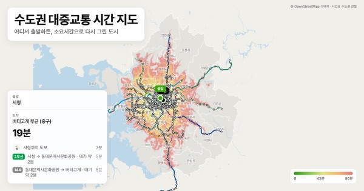
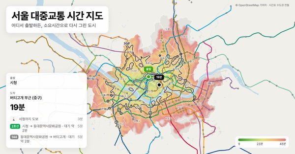
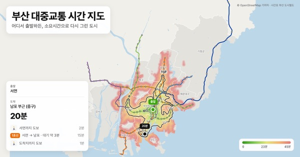
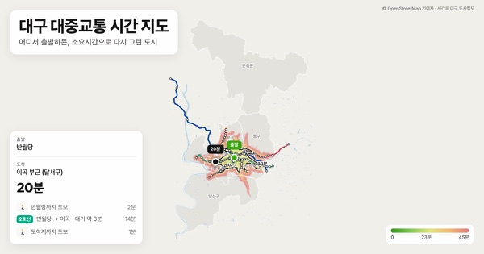
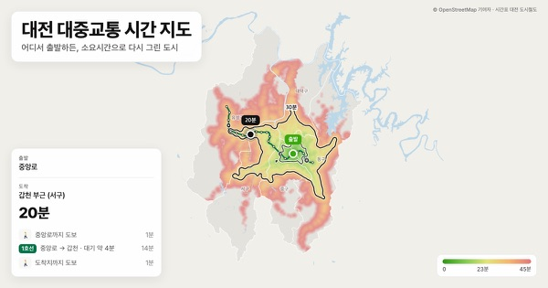
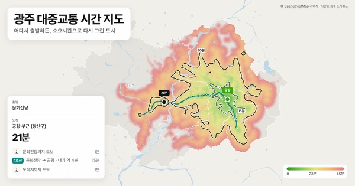

대중교통 시간 지도
대중교통으로 도시를 가로지르는 데 실제로 얼마나 걸릴까요? 도시를 고르고 출발지를 찍으면, 공식 시간표로 계산한 소요시간에 따라 도시 전체가 색칠됩니다.
도시 선택

수도권 대중교통 시간 지도
지하철역의 29%가 중심(시청)에서 30분 안 · 수도권 전철
서울 대중교통 시간 지도
지하철역의 30%가 중심(시청)에서 30분 안 · 수도권 전철
부산 대중교통 시간 지도
지하철역의 44%가 중심(서면)에서 30분 안 · 부산 도시철도
대구 대중교통 시간 지도
지하철역의 72%가 중심(반월당)에서 30분 안 · 대구 도시철도
대전 대중교통 시간 지도
지하철역의 95%가 중심(중앙로)에서 30분 안 · 대전 도시철도
광주 대중교통 시간 지도
지하철역의 100%가 중심(문화전당)에서 30분 안 · 광주 도시철도사용법
- 1. 출발지 고르기 역을 검색하거나 현재 위치를 쓰면 그 주변부터 지도가 색칠됩니다.
- 2. 도착지 누르기 소요시간과 경로(탈 노선, 환승, 도보)가 나옵니다.
- 3. 비교하기 15분·30분 등시선을 보면 정말 가까운 곳이 어디인지 알 수 있습니다.
자주 묻는 질문
소요시간은 어디서 오나요?
각 노선망의 공식 계획 시간표(수도권 전철(수도권), 수도권 전철(서울), 부산 도시철도(부산), 대구 도시철도(대구), 대전 도시철도(대전), 광주 도시철도(광주))를 GTFS 형식으로 받아 씁니다. 평일 낮 7시~20시 기준입니다.
표시되는 시간은 믿을 만한가요?
‘시간표상’ 평균입니다. 정류장까지 걷는 시간, 배차 간격 절반의 대기, 시간표상 역 사이 소요시간, 환승을 더합니다. 실시간 정보나 운행 장애는 반영하지 않습니다.
버스도 계산되나요?
네, 기본으로 버스까지 함께 계산합니다. 지도마다 버스를 끄면 지하철·경전철 같은 도시철도만으로 계산해 노선망의 뼈대를 볼 수 있습니다.
우리 도시는 왜 없나요?
도시철도 노선이 있고, 그 시간표가 GTFS로 공개돼 있어야 합니다.
이 사이트는 어디서 왔나요?
아이디어는 Anthony Castrio의 NYC Transit Time Cartogram과, 이를 파리에 옮긴 Jules Grandin의 C'est encore loin ?에서 왔습니다. 코드는 Camille Roux가 프랑스 도시용으로 만든 À portée de tram(MIT 라이선스)을 포크했습니다.